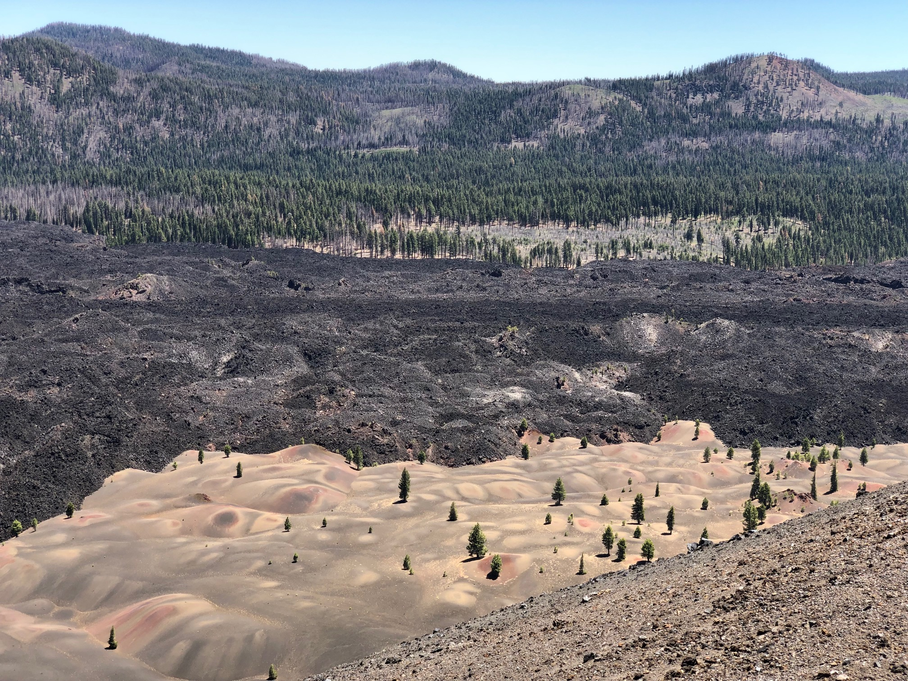

Edutecnik
Academic intelligence for instructors: prepare class, grade with human review, and see the course pulse. AI suggests; humans decide.
I build digital products for education and casinos, study how people learn mathematics, and photograph the structures I find along the way.
Products for instructors, learners, and analysts: Edutecnik, Mathscape, Axiom, Fantasy Advisor.
Projects MethodsHow people learn mathematics, what AI changes in the classroom, and the geometry hiding in data.
Research & writing ArchiveBlack-and-white photography, volcanic landscapes, and a film about music and memory.
Visual & artSelected work
Academic intelligence for instructors: prepare class, grade with human review, and see the course pulse. AI suggests; humans decide.
A visual math game: 8 worlds, 40 challenges, free-play. Move curves and figures and watch equations connect to their graphs.
Auditable FPL captain picks with a public track record, plus Pitch Lab: matchday briefs and roster tools for soccer staff.

Visual & art
Volcanic fields, fractal sets, street murals in black and white. The same eye that builds systems also looks for pattern in the world.